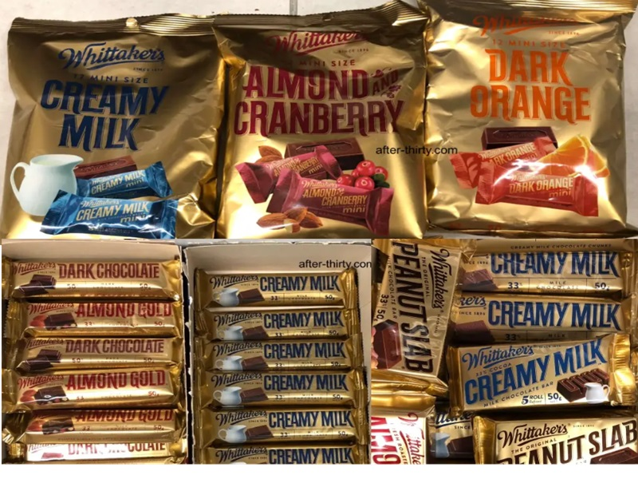
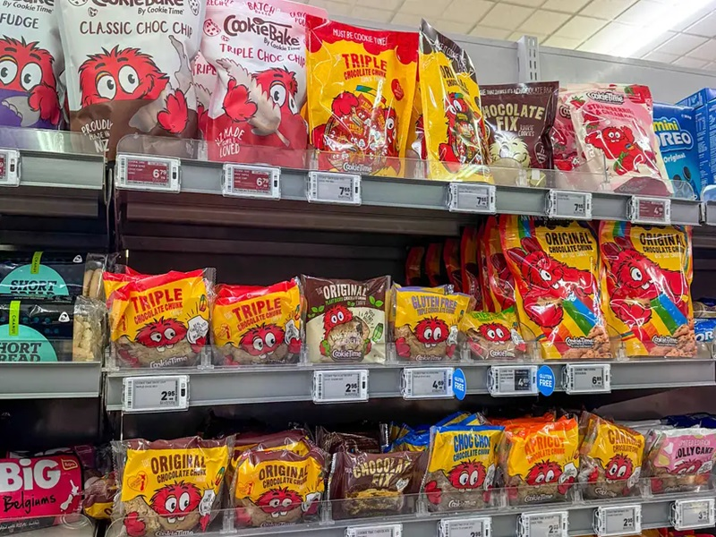
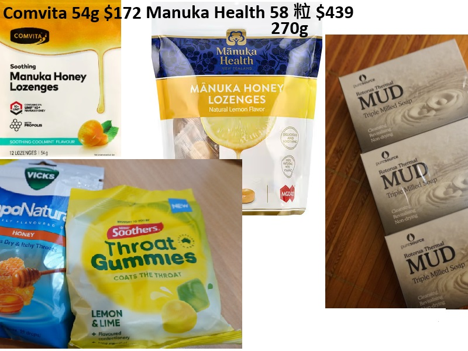

小領隊版 · 2026年4月1日－4月12日
● 第一段：台北 ➔ 布里斯本
出發：04/01 (三) 23:55 台北時間
抵達：04/02 (四) 10:35 布里斯本時間
⏱ 飛行時間：約 8 小時 40 分
● 第二段：布里斯本 ➔ 奧克蘭
出發：04/02 (四) 12:55 布里斯本時間
抵達：04/02 (四) 19:00 奧克蘭時間
⏱ 飛行時間：約 3 小時 05 分
📌 總行程時長：14h05m（含中停）｜ 📌 機型：Airbus A350-900｜ 📌 時差：布里斯本 +2hr / 奧克蘭 +5hr
● 第一段：奧克蘭 ➔ 布里斯本
出發：04/11 (六) 19:30 奧克蘭時間
抵達：04/11 (六) 21:20 布里斯本時間
⏱ 約 3 小時 50 分
● 第二段：布里斯本 ➔ 台北
出發：04/11 (六) 23:05 布里斯本時間
抵達：04/12 (日) 05:40 台北時間
⏱ 約 8 小時 35 分
📌 總行程時長：14h10m（含中停）
| 圖片 點放大 | 品項 | 推薦地點 | NZD |
|---|---|---|---|
 | Whittaker's 巧克力 | PAK'nSave / New World（D9） | $4–$6.50 |
 | Cookie Time 餅乾 | 各大超市均有 | $1–$5 |
| Red Seal 茶包 | 三家超市，約 $4 即可買 | $3.50–$5 | |
 | Manuka Honey 喉糖 | Chemist Warehouse（D9） | $10–$18 |
 | Alpine Silk 綿羊油 | Woolworths / New World | $5–$12 |
 | Barker's 果醬 | 蒂卡波特產店 D8（產地） | $6–$9 |
 | 羊毛香皂 | D8 蒂卡波特產店 | $3–$6 |
 | Icebreaker Oasis / 脖圍 | D6 皇后鎮（85折以下）；D11 機場免稅省13% | $35–$150 |
 | Kathmandu 排汗保暖衣 | D9 基督城 CBD（Colombo St，步行5分） | $28–$55 |
一趟旅行、一份行程表，透過 AI 工具協作與前端開發，
從 Word 文件變成可分享的 GitHub Pages 網站。